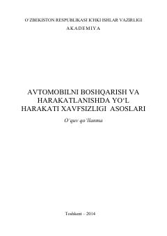

ABAvtomobilni boshqarish texnikasi va yo'l harakati xavfsizligi qoidalariga bag'ishlangan o'quv qo'llanma.
Ushbu o'quv qo'llanmada yo'l harakati xavfsizligini tashkil etish asoslari, har xil yo'l sharoitlarida haydovchining xatti-harakatlari va avtomobilni boshqarish texnikasi batafsil bayon etilgan. Shuningdek, xavfsizlik qoidalari hamda haydovchining ish o'rnida to'g'ri joylashuvi kabi amaliy tavsiyalar berilgan. Kitob IIV Akademiyasining tinglovchilari, kursantlari, talabalar va soha bilan qiziquvchi keng ommaga mo'ljallangan.